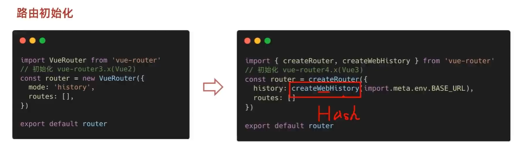
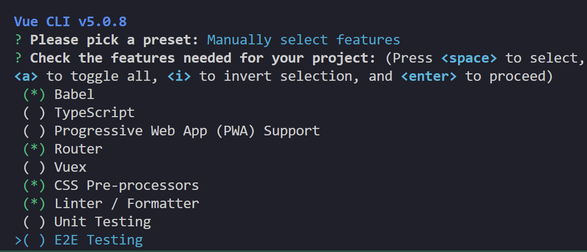

VUE2:
用于创建UI的框架
这一部分主要是先vue2,然后3
简介:
创建实例:
\(\begin{cases} 准备容器\\ 引包\\ \text{new VUE()}\\ 指定配置项\to 渲染数据\begin{cases}el指定挂载点\\data提供数据\end{cases} \end{cases}\)
Info
examples/vue/intro.html
插值表达式:
- 语法 {{表达式}}
- 使用的数据必须存在,undefined不行
- 支持的是表达式,if for等不行
- 不能在标签属性中使用插值
数据改变,渲染会自动改变
vue指令:
一堆以v-开头的标签属性,和自定义标签的data-一样
v-html:
相当于设置了该标签的innerHTML
Info
请自行查看examples/vue/v-html.html
v-show & v-if:
- v-show
- v-show="表达式": 如果表达式是true显示元素,否则隐藏
- 本质切换的css的display属性
- 一般用于频繁切换显示隐藏的场景
- v-if:
- v-if="表达式": 如果表达式是true显示元素,否则隐藏
- 创建或者移除
- 直接销毁节点,不能来回切换
Info
请自行查看examples/vue/v-ifv-show.html, 同时和v-if配对的v-else: examples/vue/v-else.html
v-on:
事件监听
Example
请自行查看examples/vue/v-on.html
v-bind:
直接设置一个属性
Example
v-bind扩展 class
Example
v-for
key
假设有
实际上如果设了key的话,v-for会按照key查找,比如有5个元素,key为1,2,3,4,5,删掉第一个之后
v-model:
给表单元素使用,双向数据绑定,可以快速设置和获取元素
常见表单:
- 输入框 input:text
- 文本框 textarea
- 复选框 input:checkbox
- 下拉菜单 input:radio
- \(\dots\)
指令修饰符:
- 按键修饰符:
- @keyup.enter: keyup是按键弹起,后面加上enter监听键盘回车
- v-model修饰符:
- v-model.trim: 去除首尾空格
- v-model.number: 转数字
- 事件修饰符:
- @事件名.stop : 阻止冒泡
- @事件名.prevent: 阻止默认行为
Info
examples/vue/v-model.html 以及 examples/vue/v-modelEg.html 以及examples/vue/commandAttr.html
计算属性:
根据现有的数据运算,根据数据变化自动重新计算
在VUE实例中加computed属性
computed / methods
- computed:
- 写在computed里
- 可以直接使用this.计算属性或者{{计算属性}}
- 会对属性进行缓存,更新的时候再缓存,性能更高
- methods:
- 写在method里,提供一个函数
- 使用的时候需要调用
计算属性的完整写法(用于修改):
kotlin写法,就是kotlin但是默认private set
Example
watch监听器:
简单写法:
Example
这个时候可以额外做防抖,
完整写法:
添加额外配置项 - deep:true 对复杂类型深度监视 - immediate:true 初始化的时候立即执行一次handler方法
Example
VUE生命周期:
- 开始: new Vue()
- 结束: 关闭网页
四个阶段
- 创建阶段:把data换成响应式的数据
- 挂载阶段:渲染模板
- 更新阶段:数据修改,更新视图
- 销毁阶段:销毁实例
钩子函数:
一共八个 - 创建阶段 - beforeCreate (这个时候没有响应式数据) - created (这个时候发送初始化渲染请求) - 挂载阶段 - beforeMount - mounted (这一刻开始才有DOM) - 更新阶段 - beforeUpdate - update - 销毁阶段 - beforeDestroy (可以释放一些资源,清楚计时器延时器等) - destoryed
Info
examples/vue/hook.html
脚手架VUE CLI
- 工程化开发 \(\begin{array}{c} \begin{array}{|c|} \hline\\ 源代码\\ \hline \end{array}\\ \text{es6语法/typescript}\\ \text{less/sass}\\ \dots \end{array}\to \begin{array}{c} \begin{array}{|c|} \hline\\ 自动化编译压缩组合\\ \hline \end{array}\\ \text{webpack}\\ \\\\ \end{array}\to \begin{array}{c} \begin{array}{|c|} \hline\\ 源代码\\ \hline \end{array}\\ \text{js(es3/es5}\\ \text{css}\\ \dots \end{array}\)
- 全局安装: yarn global add @vue/cli 或者 npm i @vue/cli -g
- 查看Vue版本: vue --version
- 创建项目架子: vue create project-name(项目名称,不能用中文)
- 启动项目: yarn serve 或者 npm run serve, 会自动找package.json
脚手架目录:
Info
examples/vue/vue2example
VUE-DEMO
├─node_modules 第三方文件夹
│
├─public 放html的地方
│ favicon.ico 网站图标
│ index.html index.html模版文件
└─src 源代码目录 -> 以后写代码的文件夹(重要)
│ │ App.vue APP根组件 -> 项目看到的内容在这里编写(重要)
│ │ main.js 入口文件 -> 打包或运行,第一个执行的文件(重要)
│ │
│ ├─assets 静态资源目录 -> 存放图片字体等
│ │
│ └─components 组件目录 -> 存放通用组件
│ .gitignore git忽视文件
│ babel.config.js babel配置文件
│ jsconfig.json js配置文件
│ package.json 项目配置文件, 和webpack那个一样
│ README.md git README
│ vue.config.js vue-cli配置文件
│ yarn.lock yarn锁文件,由yarn自动生成,锁定安装版本
index.html
<!DOCTYPE html>
<html lang="">
<head>
<meta charset="utf-8">
<meta http-equiv="X-UA-Compatible" content="IE=edge">
<meta name="viewport" content="width=device-width,initial-scale=1.0">
<link rel="icon" href="<%= BASE_URL %>favicon.ico">
<title><%= htmlWebpackPlugin.options.title %></title>
</head>
<body>
<noscript> <!--给不支持js的浏览器一个提示-->
<strong>We're sorry but <%= htmlWebpackPlugin.options.title %> doesn't work properly without JavaScript enabled. Please enable it to continue.</strong>
</noscript>
<div id="app">
<!--这里本来应该是VUE容器,但是工程化开发中不在这里写,而是在App.vue里写-->
</div>
<!-- built files will be auto injected -->
</body>
</html>
main.js
import Vue from 'vue'
import App from './App.vue'
console.log(123)
console.log(456)
Vue.config.productionTip = true // true为开发模式,false为生产模式
new Vue({
el: "#app",
// render: h => h(App),
// 完整render写法:
render: (createElement) => {
return createElement(App)
}
})//.$mount('#app')// 这里$mount和el作用完全一致
组件化开发
Info
examples/vue/vue2example/src/components
把一个网页拆成多个结构分开维护
其中根组件是整个应用最上层的组件,包裹所有普通小组件
App.vue可以分成三个组成部分
//这一部分是结构,定义网页布局(在VUE2中有且只有一个根元素)
<template>
<div id="app">
<img alt="Vue logo" src="./assets/logo.png">
<img alt="Vue logo" src="./assets/logo.png">
<HelloWorld msg="Welcome to Your Vue.js App"/>
</div>
</template>
//这一部分定义行为
<script>
// 这里可以提供 data(特殊) methods, computed, watch 以及狗子函数
import HelloWorld from './components/HelloWorld.vue'
export default {
name: 'App',
components: {
HelloWorld
}
}
</script>
//这一部分定义样式
//如果需要让这个支持less,需要设置lang="less"
//然后装less-loader和less
<style>
#app {
font-family: Avenir, Helvetica, Arial, sans-serif;
-webkit-font-smoothing: antialiased;
-moz-osx-font-smoothing: grayscale;
text-align: center;
color: #2c3e50;
margin-top: 60px;
}
</style>
普通组件的注册使用
Info
examples/vue/vue2examples/src/App.vue
- 局部注册: 只能在注册的组件中使用
- 创建.vue文件(三个组成部分)(在components文件夹里)
- 在使用的组件内导入注册, 然后就可以知己当做html标签使用
// 比如:
<template>
<div class="App">
<!--头部组件-->
<ExampleHeader></ExampleHeader>
<!--主体组件-->
<ExampleBody></ExampleBody>
<!--底部组件-->
<ExampleTail></ExampleTail>
</div>
</template>
<script>
import ExampleHeader from "./components/ExampleHead.vue"
import ExampleBody from "./components/ExampleBody.vue"
import ExampleTail from "./components/ExampleTail.vue"
export default {
components: {
//"组件名":"组件对象"
ExampleHeader: ExampleHeader,
ExampleBody: ExampleBody,
ExampleTail: ExampleTail
}
}
</script>
<style>
.App{
width: 600px;
height: 700px;
background-color: #87ceeb;
margin: 0 auto;
padding: 20px;
}
</style>
- 全局注册: 所有组件都能使用
- 创建.vue文件(三个组成部分)
- main.js中进行全局注册
和上面那个相比
敲< vue>可以快捷生成模版(vscode插件)
三个组成部分
三个组成部分: - < template>: 只能有一个根元素 - < style>: - 全局样式(默认): 影响所有组件 - 局部样式: scoped下的样式,之作用于当前组件 - < script> - el根示例独有 - data是一个函数 - 其他配置项一致
scoped:
Info
examples/vue/vue2examples/components
默认: 写在组件里的样式会全局生效,容易造成组件之间的样式问题
这样就只会在当前组件生效scoped的原理是给当前模版内的所有元素,都会被添加上一个 data-v-哈希值 自定义属性
data是一个函数:
Info
examples/vue/vue2example2/src/components/BaseOne.vue
一个组件的data选项必须是一个函数,保证每个组件实例维护独立的一份数据对象
组件通信:
组件和组件之间传递数据 - 组件的数据是独立的,无法直接访问其他组件的数据
组件关系: - 父子关系 - props和$emit - 非父子关系 - provide & inject - eventbus
父子关系:
Info
example/vue/vue2communicate 中父组件App.vue和子组件UserInfo.vue之间的props传递变量,之前没写emit，这回加上了
- 父组件通过props将数据传递给子组件
- 子组件通过$emit使用数据
//父组件
<template>
<div>
<Son :title="myTitle" @keyword="fatherFn"></Son>
</div>
</template>
<script>
import Son from ...
export default{
data(){
return {
myTitle: "something"
}
},
methods:{
fatherFn(){
//something
}
},
components:{
Son,
}
}
</script>
//子组件
<template>
<div>
{{title}}
</div>
</template>
<script>
export default{
props: ["title"],
methods: {
sonFn(){
//something
this.$emit("keyword",**kwargs)
}
}
}
</script>
props：
是组件上注册的一些自定义属性
prop作用:向子组件传递数据
可以传递任意数量,任意类型的props
props校验:
给prop验证要求,不符合要求就会有错误提示
- 类型校验:
- 非空校验，默认值，自定义校验
props: {
校验的属性名： {
type: 类型， // Number String Boolean ...
required: true, // 是否必填
validator (value) {
// 自定义校验逻辑
return 是否通过校验
}
}
}
prop和data:
- data的数据是自己的: 随便改
- prop的数据是外部的: 不能随便改,要遵循单向数据流(父组件的数据改动会自动向下流动)
非父子关系: eventbus事件总线:
Info
examples/vue/vue2eventbus
复杂场景用vuex（vue2）, pinia(vue3)
- 创建一个都等你访问到的事件总线(空的VUE实例),一般会存到utils文件夹下
- 发送方触发Bus实例的事件
非父子通信: provide&inject
Info
example/vue/vue2inject
跨层级共享数据
//子组件
export default{
inject: ["color","userInfo"],
created(){
console.log(this.color, this.userInfo)
}
}
这个案例里面简单类型(color)是响应式的,如果修改,相应的渲染不会修改
但是复杂类型(userInfo)被修改的时候相应的渲染也会被修改
v-model:
Info
examples/vue/v-model.html 以及 examples/vue/v-modelEg.html
本质是value属性和input时间的和写
<template>
<div>
<input v-model="msg" type="text">
<input :value="msg" @input="msg = $event.target.value" type="text">
</div>
</template>
表单类组件封装:
Info
example/vue/vue2form
数据由父组件提供,子组件修改 - 父传子: props传下去, v-model拆解绑定数据 - 子传父: 监听输入, 传给父组件修改 - 在传给父组件的时候可以用$event直接获取形参
<template>
<div id="app">
<BaseSelect
:cityId="selectId"
@changeCity="selectId = $event"
>
</BaseSelect>
<p>{{selectId}}</p>
</div>
</template>
<script>
import BaseSelect from "./components/BaseSelect.vue"
export default {
data(){
return {
selectId: "102"
}
},
components:{
BaseSelect
},
methods:{
changeId(value){
this.selectId = value
}
}
}
</script>
<style>
</style>
子组件不能用v-model因为数据是父组件的,但是父组件可以用v-model
父组件v-model简化代码,实现子组件和父组件数据双向绑定
比如在上面的例子中,这个是父组件,所以可以直接用v-model
但是子组件的$emit函数中只能是'input', props中只能是value,局限性较大
sync修饰符:
Info
example/vue/vue2sync
可以实现子组件和父组件的双向绑定,简化代码
就是:属性名和@update:属性名的合写
- prop属性名可以自定义,不固定为value
Info
ref 和 $refs
Info
example/vue/vue2ref
queryselector的查找范围是整个文档，但是ref和$ref的查找范围是当前组件
通过this.$refs在这个组件里查询这个元素
<div ref="something" class="someclass"></div>
this.$refs.myChart
// 也可以调用这个组件的方法
this.$refs.myChart.someMethod()
vue异步更新, $nextTick
Info
example/vue/vue2async
vue的更新机制: 为了提升性能,vue异步更新元素
用$nextTick等待更新完成
组件和自定义指令:
自定义指令:
Info
examples/vue/vue2-sel-defined-commands
内置指令: v-html, v-model等
举例: autofocus在safari浏览器有兼容性,操作dom的时候需要用focus()
这样每个需要获取焦点的元素都要写一遍
可以写(如果要传值,获取指令的值用参数名.value)
全局注册:
局部注册:
配置项:
inserted: 元素被插入到页面
update: 值被更新
插槽:
Info
examples/vue/vue2slot 这个还挺重要的，尤其是element-plus里很多组件都有插槽
让组件内的一些结构支持自定义
- 组件内需要定制的结构部分改用< slot>< /slot>站位
- 使用组件时在标签内部传入结构替换slot
后备内容(默认值)
在< slot>< /slot>标签内防止内容作为显示内容
具名插槽(多处slot)
通过name属性区分名字, 在使用组件时,用template标签包裹,用v-slot:名字确定是那个插槽, 其中v-slot:名字可以简写成#名字
作用域插槽(不属于插槽结构)
可以绑定数据
给slot标签添加属性
所有的属性都会被收集到一个对象当中
在template中通过#插槽名="obj"接收
路由
Info
examples/vue/vue2router
SPA(Single Page Aplication)单页应用程序

路由:
路径和组件的映射关系, eg localhost:8888/notebook
VUERouter:
基础步骤
-
下载
yarn add vue-router@3.6.5- 版本: \(\begin{array}{c} \text{Vue2} & \text{VueRouter3.x} & \text{Vuex3.x}\\ \hline \text{Vue3} & \text{VueRouter4.x} & \text{Vuex4.x} \end{array}\) -
引入
import VueRouter from 'vue-router'
- 安装注册
Vue.use(VueRouter)
- 创建路由对象
```const router = new VueRouter()```
- 把路由对象注入到VUE实例中
核心步骤:
-
创建需要的组件,推荐放到views文件夹下,配置路由规则
-
配置导航, 配置路由出口
组件存放问题:
页面组件:
用来展示页面,配合路由使用, 放在views文件夹下
复用组件:
用来展示数据,常用于复用, 放在components文件夹下
路由的封装抽离:
在router文件夹下的js文件里设置路由之后在App.vue中import
使用路径时可以用@,@等同于src文件夹的绝对路径
用router-link替换a标签(声明式导航)
<a href="#/find></a>
等同于
<router-link to='/find'></router-link>
实际也是渲染成a标签,但是可以高亮
激活时会自动加上router-link-active类标签
router -link 类名:
-
router-link-active 模糊匹配：
<a href="#/find" class-"router-link-exact-active">可以匹配/my, /my/a, /my/b -
router-link-axact-active 精准匹配：
<a href="#/find" class-"router-link-exact-active">只能匹配/my
自定义匹配的类名(router-link-exact-active):
在index.js里配置类名:
const router = new VueRouter({
routes: [],
linkActiveClass: "类名1",
linkExactActiveClass: "类名2"
})
声明式导航：
跳转的时候进行传值
查询参数传参：
- 通过？携带参数,多个参数用&连接
-
对应页面组件接受床底过来的值:
$route.query.参数名 -
在vue其他地方获取参数要加this
this.$route.query.参数名
动态路由传参
- 配置动态路由:
- 这个时候需要用
$route.params.参数名
路由重定向
匹配path之后强制重定向到路径
const router = new VueRouter({
routes:[
{ path: '/search/:words', component: FirstPage, redirect: "..." },
],
})
可以写
const router = new VueRouter({
routes:[
{ path: '*', component: FirstPage, redirect: "..." },
],
})
来避免404
路由模式:
- 默认是hash,就是localhost的那种带井号的
- 可以调整成history去掉井号,以后上线需要服务器支持
const router = new VueRouter({
routes:[
{ path: '/search/:words', component: FirstPage, redirect: "..." },
],
mode: "history"
})
用程序跳转:
-
path路径跳转:
this.$router.push({ `路径` }) -
name路径跳转(适合path比较长的场景)
传参
-
path路径跳转:
this.$router.push({ path: `路径`, query: { 参数1: 参数值1, ... } }) -
name路径跳转(适合path比较长的场景)
自定义创建项目：
vue create 之后选自定义， 勾选需要的配置项

eslint规范中应用最广的是standard config，无分号规范
eslint代码规范：
- 字符串使用单引号
- 无分号
- 关键字后加空格
- 函数名后加空格
- 用 === 而不是 ==
手动修改（纯纯折磨）
自动修改：
vscode插件高亮错误, 但感觉还是算了吧,之后vue3里直接eslint + prettier
vuex：
和之后的pinia是一个东西
Info
examples/vue/vue2vuex ,主要看src/store文件夹下的东西
状态管理工具，管理vue通用数据（多组件共享）
应用场景: - 某个状态在很多个组件中使用 - 多个组件共同维护一个数据
可以集中化管理,响应式变化
使用:
- 安装vuex,版本看router那里
- 在store(和component同级)的index.js存放vuex
- 创建仓库(Vue.use(Vuex), new Vuex.store())
- main.js导入挂载
state状态:
提供数据:
通过this.$store.state.count调用
同时可以引入mapState(import {mapState} from 'vuex'), 通过mapState(["count"])调用
也可以写入computed里
之后就可以直接count调用
不过和data一样,建议写成函数
修改数据:
组件中不能直接修改仓库数据, 建议在store中配置strict: true开启严格模式,任何视图在组件中直接++等修改数据均会报错
修改仓库中数据智能通过mutations
const store = new Vuex.Store({
state: {
count: 101
},
mutations:{
add(state){
state.count += 1
}
}
})
调用的时候需要通过commit this.$store.commit('addCount')
mutations支持传参,不过第一个参数是state
调用的时候变成this.$store.commit('addCount', n)
vuex不支持传多个参数,可以封装一个json过去
mapMutations
和mapState很像
可以
之后调用的时候就可以
actions:
类似setInterval,异步操作,
mutations里的方法必须是同步的,异步的扔到actions里
actions不能修改state,还是需要commit mutations里的方法
同样有mapActions
getters
类似计算属性,同样有mapGetters,只不过这个要扔到computed里
vuex多模块:
同样的方法写多个模块
// in store/modules/user.js
const state = {
userInfo: {
name: 'zs',
age: 18
}
}
const mutations = {}
const actions = {}
const getters = {}
export default {
state,
mutations,
actions,
getters
}
不过这样在使用该仓库的时候需要import, 剩下的一样
子模块会被挂在到根处的state
可以通过mapState映射
- 默认根级别的映射: mapState(['xxx'])
- 自模块的映射: mapState('模块名',['xxx']),这个时候需要再export里加上namespaced: true
子模块可以在maoState里注册然后直接使用,也可以从根$store慢慢找数据
...mapState(['count', 'user'])...mapState('user',['userInfo']),这个需要namespaced: true
使用子模块中getters的数据
- $store.getters['模块名/xxx']
- mapGetters映射
- 根级别映射 mapGetters(['xxx'])
- 子模块映射 mapGetters('模块名', ['xxx']), 需要namespaced: true
调用子模块中的函数
- $store.commit('模块名/xxx',参数)
- mapMutations映射
- mapMutations(['xxx'])
- mapMutations('模块名',['xxx']),需要namespaced: true
剩下的actions 一样
组件库:
- PC端: element-ui ant-design-vue(vue2,3都支持)
- 移动端 vant-ui Mint-ui Cube UI(后面这俩用的比较少)
vant组件库:(以下在vue2环境):
Info
这部分就见仁见智了，vant似乎主要面对移动端，PC端element-ui element-plus用的更多，不过都是看官方文档
-
安装:
npm i vant@latest-v2 -S -
使用:
-
自动按需引入:
JavaScript// babel.config.js module.exports = { plugins: [ ['import', { libraryName: 'vant', libraryDirectory: 'es', style: true }, 'vant'] ] };之后引入单独的插件:
- 手动按需引入:(看官网,不推荐) - 全部引入:之后就可以
或者为了整洁,把vant配置项放到单独的js文件里,然后import这个js文件
element-ui
vw适配:
- 安装:
yarn add postcss-px-to-viewport@1.1.1 -D - 使用